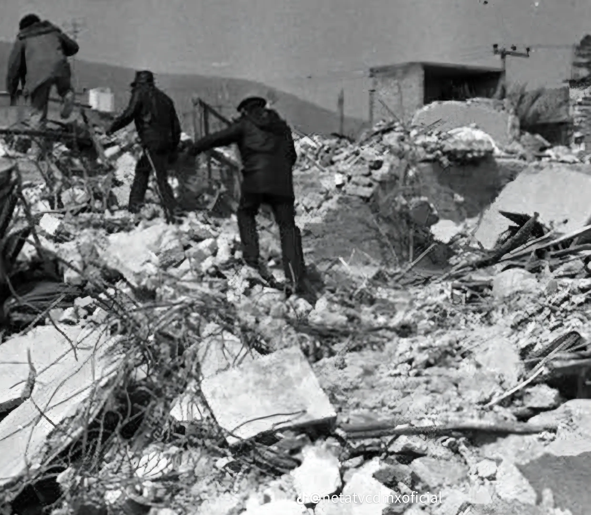
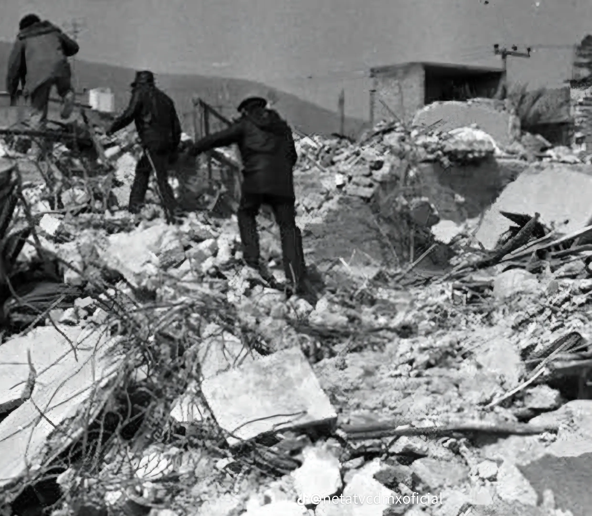

Aspirantes 2025
Presentan
TRAGEDIA DE SAN JUANICO, 1984
Análisis y Lecciones para la Formación en Emergencias
Integrantes:
- **Encargado:** ASP PEREZ EDUARDO
- ASP PADILLA MATIAS
- ASP CORONEL AGUSTIN
- ASP POLO FACUNDO
- ASP MAYANO ARIADNA
- ASP FERNANDEZ TOMAS
- ASP GRAFF MAURO
- ASP ARGUELLO ALEXIS
- ASP NIEVA ABRIL
- ASP GARCIA DAVID
- ASP RUIZ DANIEL
**Institución:** Bomberos Voluntarios de Argentina - Aspirantes 2025
El Día que Marcó un Antes y un Después
"El 19 de noviembre de 1984, la comunidad de San Juan Ixhuatepec fue escenario de una de las peores tragedias industriales de la historia de México. Una serie de devastadoras explosiones en una planta de almacenamiento de PEMEX no solo dejó una profunda cicatriz en la comunidad, sino que transformó para siempre la seguridad industrial y la protección civil en el país. Este trabajo analiza las causas, el impacto y las lecciones de un desastre que nunca debe ser olvidado, especialmente por quienes nos preparamos para responder a emergencias."
Tema 1: Contexto - Crónica de un Riesgo Anunciado
- **Comunidad en Riesgo:** San Juan Ixhuatepec (San Juanico) era una zona de rápido crecimiento y densamente poblada, con viviendas, a veces precarias, construidas muy cerca de la planta de PEMEX.
- **Planta Estratégica:** La instalación almacenaba y distribuía Gas Licuado de Petróleo (GLP), siendo una de las más grandes de América Latina y vital para el suministro energético del Valle de México.
- **Seguridad Deficiente:** Investigaciones posteriores sugirieron graves fallas de seguridad, como un cumplimiento dudoso de las normativas, mantenimiento cuestionado y la peligrosa proximidad de las viviendas.
Tema 2: Minuto a Minuto - La Mañana del Horror
- **05:30 hs - La Fuga:** Una falla, probablemente la ruptura de una tubería, provocó una fuga masiva de GLP. Durante 10 a 15 minutos, una nube de gas invisible y más densa que el aire se extendió por la planta y las calles cercanas. Testimonios hablan de un fuerte olor a gas y un "silbido" constante
- **05:44 hs - La Primera Explosión:** La nube de gas encontró un punto de ignición, causando una explosión brutal descrita como un terremoto y un destello cegador. Esta primera bola de fuego arrasó con todo en un radio de cientos de metros.
- **05:46 hs en adelante - Las BLEVEs:** El fuego inicial sobrecalentó otros tanques, desatando una secuencia aterradora de al menos once explosiones tipo BLEVE durante la siguiente hora, multiplicando la destrucción.
Tema 3: Causas Técnicas - La Falla Fatal
- **Fuga Inicial:** El desastre comenzó con una fuga masiva de GLP, probablemente por la ruptura de una tubería de unas 8 pulgadas de diámetro
- **Ignición:** La nube de gas encontró una fuente de ignición (posiblemente quemadores de la planta o una falla eléctrica), causando una primera y devastadora explosión de tipo UVCE (Explosión de Nube de Vapor No Confinada).
- **Efecto en Cadena (BLEVEs):** El intenso fuego de la primera explosión calentó otros tanques, debilitando su estructura y aumentando la presión interna hasta que fallaron catastróficamente, generando múltiples BLEVEs que lanzaron bolas de fuego y fragmentos de metal.
Tema 4: Causas Subyacentes - La "Tormenta Perfecta"
- **Mantenimiento y Procedimientos:** Se sugiere un mantenimiento deficiente y falta de revisiones. Un error crítico fue el sobrellenado de los tanques de almacenamiento, lo que aumenta drásticamente el riesgo de explosión por sobrepresión.
- **Diseño y Ubicación:** La planta estaba peligrosamente pegada a una zona residencial densamente poblada, sin zonas de seguridad. Además, los tanques estaban muy próximos entre sí, lo que facilitó el "efecto dominó.
- **Fallas Regulatorias:** Todo fue posible por un marco regulatorio débil y una falta de supervisión efectiva, lo que generó una cultura donde los riesgos se subestimaban,
Tema 5: Impacto Humano Inmediato
- **Víctimas:** Cientos de fallecidos oficiales dejó un saldo de 500 o más muertos y aproximadamente 2,000 heridos. Además, más de 10,000 personas fueron evacuadas debido a los daños causados por las explosiones en un área de hasta un kilómetro alrededor de la planta de almacenamiento de gas.
- **Drama Humano:** Detrás de cada número, hay historias de terror y pérdida, con familias enteras destrozadas. El impacto psicológico inmediato fue un estado de shock y desesperación.
- **Caos:** La "zona cero" se convirtió en un infierno, con pánico generalizado, gente huyendo y un acceso muy dificultoso para los primeros rescatistas.
Tema 6: Respuesta de Bomberos - Héroes en el Infierno
- **Primeros en Llegar:** Los cuerpos de bomberos más cercanos (Tlalnepantla y D.F.) encontraron un escenario apocalíptico que superaba cualquier entrenamiento, con explosiones continuas ocurriendo ante sus ojos.
- **Táctica Principal:** La estrategia fue defensiva: el enfriamiento masivo con agua de los tanques que aún no habían explotado para intentar evitar más BLEVEs.
- **Desafíos:** Lucharon una batalla desigual con equipamiento de protección muy limitado para los estándares actuales, enfrentando falta de agua, el riesgo mortal de las explosiones y accesos bloqueados.
Tema 7: La Respuesta Unida
- **Instituciones:** La Cruz Roja fue vital en la atención médica y traslado de heridos. El Ejército implementó el Plan DN-III-E para asegurar el perímetro y apoyar en la logística, mientras la policía trabajó para controlar el caos.
- **Rescate y Evacuación:** Se realizaron labores de rescate desesperadas y peligrosas para buscar sobrevivientes, mientras miles de personas eran evacuadas en medio del pánico.
- **Solidaridad Popular:** La sociedad civil mexicana reaccionó con una increíble ola de solidaridad, donando sangre, comida, ropa y medicinas, y con cientos de voluntarios ayudando directamente en la zona.
Tema 8: Consecuencias a Largo Plazo
- **Psicológicas:** La tragedia dejó un trauma masivo, con miles de personas desarrollando Trastorno de Estrés Postraumático (TEPT), afectando a sobrevivientes, familiares y rescatistas.
- **Identificación:** Fue un proceso largo y doloroso debido al estado irreconocible de muchos cuerpos, lo que obligó al uso de fosas comunes inicialmente.
- **Reconstrucción:** Cierre definitivo de la planta de PEMEX y un monumental trabajo de limpieza y reconstrucción de la zona.
Tema 9: Un Nuevo Paradigma en Prevención
- **Leyes:** San Juanico forzó la modernización de las leyes. Fue un catalizador para la creación del Sistema Nacional de Protección Civil (SINAPROC) en 1986 y el endurecimiento de las Normas Oficiales Mexicanas (NOMs).
- **Protocolos:** Nació la protección civil moderna, basada en la prevención y planificación, obligando a las industrias a tener planes de emergencia y dando importancia a los simulacros y la coordinación.
- **Zonificación:** La tragedia demostró la necesidad crítica de mantener distancias seguras (zonas de amortiguamiento) entre las industrias de alto riesgo y las viviendas.
Tema 10: Memoria y Relevancia Actual
- **Memoria Histórica:** Se mantiene viva a través de monumentos y conmemoraciones anuales, lideradas principalmente por los sobrevivientes y sus familias.
- **Relevancia para Bomberos:** San Juanico es una lección fundamental y permanente sobre los riesgos del GLP, las BLEVEs, la importancia de conocer las instalaciones peligrosas, la coordinación y, sobre todo, la autoprotección del rescatista.
- **Compromiso:** Mantener la memoria es una herramienta de prevención y un homenaje a las víctimas, que obliga a los futuros profesionales a prepararse con excelencia.
Galería Multimedia
Haz clic en un elemento para ampliarlo.

 

LECCIÓN ORAL
Buenos d√≠as. El prop√≥sito de esta lecci√≥n es analizar la tragedia de San Juan Ixhuatepec de 1984, no como un hecho hist√≥rico, sino como un caso de estudio para definir c√≥mo actuar√≠amos hoy, en nuestro partido de Malvinas Argentinas, ante un evento de similar magnitud. üìà Se demostrará c√≥mo la aplicaci√≥n de protocolos modernos, el conocimiento t√©cnico y una estructura de mando clara y escalonada transformar√≠an por completo el resultado de una operaci√≥n de esta escala. Análisis del Incidente Original y Escenario Hipot√©tico üí•
El Escenario y el Nuevo Paradigma
- **Incidente Original:** Ruptura de cañería de GLP en PEMEX, fuga masiva, ignición y secuencia de BLEVEs en 6 esferas y 48 cilindros.
- **Escenario Hipotético:** Planta ficticia "Energas del Norte S.A." en el Parque Industrial de Malvinas Argentinas. 05:30 hs, ocurre la ignición.
- **Nuevo Paradigma:** La respuesta moderna se basa en protocolo, conocimiento y estructura, no en el coraje individual.
FASE 1: Alarma y Evaluación Inicial
- **Escenario y situación inicial:** Planta ficticia “Energas del Norte S.A.” en Malvinas Argentinas, dedicada al almacenamiento de GLP con cinco esferas de gran capacidad. A las 05:30 h, una falla en una brida provoca fuga masiva de gas.
- **Acción Inmediata:** El equipo de emergencias intenta cerrar la válvula de seccionamiento con protección y líneas de agua, pero la fuga supera su control. Una chispa provoca explosión inicial y BLEVE de una esfera de 1.600 m³, seguido por otro BLEVE en una segunda esfera mediana.
- **Decisión Crítica:** Dos esferas destruidas; las tres restantes expuestas a calor extremo y en riesgo inminente de explotar. Daños severos en la planta y bajas humanas.
- **Reporte:** Se declara “Alarma General por Catástrofe” y se despachan 4 dotaciones de bomberos, SAME, Defensa Civil, Policía, Tránsito y cuarteles vecinos. La primera unidad establece un perímetro de 800 m según la GRE y solicita refuerzos para una respuesta masiva.
Concepto Clave: ¿Qué es el GLP?
- **Definición:** Gas Licuado de Petróleo, una mezcla de gases propano y butano que se almacena en estado líquido bajo presión.
- **Propiedades Clave:**
- **Más pesado que el aire:** En una fuga, no se disipa hacia arriba. Se arrastra por el suelo como un líquido invisible, acumulándose en zonas bajas (sótanos, alcantarillas).
- **Altamente Inflamable:** Requiere solo una pequeña chispa para encenderse de forma explosiva.
- **Gran Expansión:** 1 litro de GLP líquido se convierte en aproximadamente 270 litros de gas, creando nubes masivas muy rápidamente.
- **Peligro Principal:** La formación de estas nubes de vapor no confinadas (UVCE) que, al encontrar una ignición, provocan la devastadora explosión inicial.
Riesgo Principal: ¿Qué es un BLEVE?
BLEVE (Boiling Liquid Expanding Vapor Explosion) üî•üí£ ¬øQu√© es? Es la madre de todas las explosiones en un incendio con tanques. Imagina una olla a presi√≥n que dejas en el fuego sin válvula de seguridad. El l√≠quido adentro hierve, la presi√≥n sube, el metal de la olla se calienta y se debilita hasta que... ¡PUM! La Secuencia Exacta: Fuego Externo: Las llamas de un incendio calientan un tanque que contiene GLP. El L√≠quido Hierve: El GLP dentro del tanque empieza a hervir, generando una presi√≥n interna brutal. El Metal se Debilita: El fuego debilita el metal del tanque, sobre todo en la parte de arriba donde solo hay vapor. Falla Catastr√≥fica: El tanque no aguanta más y se rompe violentamente. El l√≠quido sobrecalentado se libera de golpe, se expande instantáneamente y se enciende, creando una gigantesca bola de fuego y lanzando trozos del tanque a cientos de metros.
FASE 2: Sistema de Comando de Incidentes (SCI)
- **Establecimiento del Puesto de Comando y Comando Unificado:** El Jefe del Cuerpo asume como Comandante del Incidente, activa el Sistema de Comando de Incidentes (SCI) y establece un Puesto de Comando seguro y contra el viento. Se conforma un Comando Unificado con Bomberos, Defensa Civil, SAME y Policía para coordinar decisiones estratégicas.
- Roles clave del Staff de Comando Jefe de Operaciones: Ejecuta el Plan de Acción, dirige extinción, enfriamiento y rescate. Jefe de Planificación: Analiza información, actualiza mapas, prepara planes a 12 horas. Jefe de Logística: Abastece agua, combustible, EPP y coordina relevos. Oficial de Seguridad: Controla riesgos, define zonas y puede detener operaciones peligrosas.
- Brigadas especializadas y escalada de recursos Se activa la brigada de Materiales Peligrosos (MatPel) para monitoreo y asesoramiento técnico. Defensa Civil inicia escalada provincial y, de ser necesario, nacional (SINAGIR) para sumar recursos federales.
¿Qué es el Sistema de Comando de Incidentes?
- **Definición:** Un sistema de gestión estandarizado para organizar la respuesta ante emergencias complejas. Su objetivo es evitar el caos, establecer una cadena de mando clara y coordinar a múltiples agencias.
- **Principios Clave:**
- **Comando Unificado:** Jefes de distintas agencias (Bomberos, Policía, SAME) toman decisiones juntos en un solo Puesto de Comando.
- **Roles Definidos:** Se designan Jefes para cada área funcional: Operaciones, Planificación, Logística y Administración/Finanzas, además de un Oficial de Seguridad.
- **Comunicaciones Claras:** Se usa un lenguaje común y canales de radio designados para evitar malentendidos.
- **Acción Inmediata:** Permite gestionar los recursos de manera eficiente y segura, garantizando que cada persona en la escena sepa qué hacer, a quién reportar y cuáles son los objetivos.
FASE 3: Táctica 100% Defensiva
- **Estrategia:** Estrategia General: Enfriamiento Masivo La estrategia es una y no es negociable: DEFENSIVA. El objetivo principal no es extinguir el fuego de gas, sino salvar las tres esferas restantes (las dos grandes de 2,400 m³ y la mediana de 1,600 m³) previniendo nuevos BLEVEs. Esto se logra mediante la aplicación masiva y continua de agua para enfriar la estructura metálica de los tanques.
- 3.2 Movilizaci√≥n y Log√≠stica del Agua üíß El √©xito de la operaci√≥n depende de un flujo de agua ininterrumpido. El Jefe de Operaciones y el de Log√≠stica establecen un sistema met√≥dico: √Årea de Espera (Staging Area): Se establece un punto de concentraci√≥n en la Zona Fr√≠a (ej: un estacionamiento amplio). Toda unidad que llega, sin excepci√≥n, se reporta y estaciona all√≠. Ningún veh√≠culo se mueve sin una orden directa del Jefe de Operaciones. Esto evita el congestionamiento y el caos en la escena. Posicionamiento de "Autobombas Madre": Desde el √Årea de Espera, se ordena el avance de unidades espec√≠ficas. Estas autobombas no van a atacar el fuego directamente. Se posicionan en el l√≠mite entre la Zona Tibia y la Fr√≠a y actúan como bombas de alta presi√≥n, impulsando el agua hacia los monitores. El "Circuito del Agua": Para alimentar a las "bombas madre", se crea un carrusel de camiones cisterna: Punto de Carga: Se establece un punto de carga lejos de la escena (un hidrante industrial, un lago o el canal de un arroyo cercano). Transporte y Descarga: Los cisternas se llenan y viajan hasta la Zona Tibia, donde descargan su contenido en piletas de lona portátiles de gran capacidad (15,000 a 25,000 litros). Alimentaci√≥n: Las "autobombas madre" succionan el agua de estas piletas y la bombean a la presi√≥n requerida. Regreso: El cisterna vac√≠o regresa inmediatamente al punto de carga. Este ciclo garantiza un abastecimiento constante y masivo.
- Táctica de Enfriamiento y Uso de Agentes Caudal de Agua Requerido: La norma indica que se debe aplicar un caudal mínimo de 10 litros por minuto por cada metro cuadrado de superficie del tanque. Para una esfera de 2,400 m³, esto se traduce en un objetivo de entre 10,000 y 15,000 litros por minuto (LPM) aplicados directamente sobre su superficie para absorber el calor de la radiación. Despliegue de Monitores ("Operación Relámpago"): Se forman Equipos de Despliegue de 2-3 bomberos. Bajo una "Línea de Protección" (cortina de agua) que los protege del calor radiante, avanzan rápidamente usando cobertura física. La operación de colocar el monitor portátil y retirarse debe lo mas rapido posible. Una vez el equipo está a salvo, el operador de la "autobomba madre" da presión a la línea y el monitor comienza a operar de forma desatendida. Se necesitan de 2 a 4 monitores de gran caudal por cada esfera para asegurar un enfriamiento efectivo. Uso de Espuma (Rol Secundario): ☁️ La espuma NO se usa para apagar el fuego principal de gas. Su rol es vital pero secundario: Proteger Exposiciones: Se aplica sobre derrames de otros líquidos inflamables en la planta para evitar que se enciendan. Supresión de Vapores: Si se logra cerrar una válvula y queda un charco de GLP líquido, una capa de espuma de alta expansión puede reducir drásticamente la evaporación y el riesgo de una re-ignición.
- **Operación Remota:** Se da presión a las líneas desde una distancia segura.
FASES 4 y 5: Control y Cierre del Servicio
- Control y Estabilización El incidente se declara “Controlado” cuando las temperaturas en las esferas bajan a niveles seguros, el fuego principal disminuye y no hay riesgo de propagación. Se establece una Guardia de Cenizas con enfriamiento continuo, extinción de focos secundarios y vigilancia para investigadores. Se inicia la desmovilización ordenada y agradecimiento a los cuarteles de apoyo.
- **Guardia de Cenizas:** Finalización del Servicio Una vez segura la escena, se transfiere formalmente el control a peritos de bomberos y Policía Científica, bajo la autoridad judicial. Se planifica el regreso de las dotaciones y el retiro organizado del área.
- **Post-Incidente:** En el cuartel se realizan pruebas hidrostáticas a mangueras, recarga y revisión de ERAs, y mantenimiento mecánico de autobombas. Se cuida al personal con un debriefing operativo inmediato y sesiones de apoyo psicológico (CISD) en los días posteriores para gestionar el estrés y el impacto emocional.
Conclusión Final: De la Tragedia al Protocolo
- La respuesta moderna se basa en **protocolo, conocimiento y una estructura escalonada**.
- Pasamos del coraje individual a una operación profesional gestionada por un **Sistema de Comando de Incidentes**.
- Cada bombero conoce su función, los riesgos como el BLEVE y las herramientas como la GRE.
- El objetivo es cumplir con el deber, garantizando que **todos volvamos a casa**.
¡Muchas Gracias!
Agradecimientos: [A los instructores, al cuartel, y compañeros]
Integrantes:
- **Encargado:** ASP PEREZ EDUARDO
- ASP PADILLA MATIAS
- ASP CORONEL AGUSTIN
- ASP POLO FACUNDO
- ASP MAYANO ARIADNA
- ASP FERNANDEZ TOMAS
- ASP GRAFF MAURO
- ASP ARGUELLO ALEXIS
- ASP NIEVA ABRIL
- ASP GARCIA DAVID
- ASP RUIZ DANIEL
"Ubi dolor, ibi vigili"